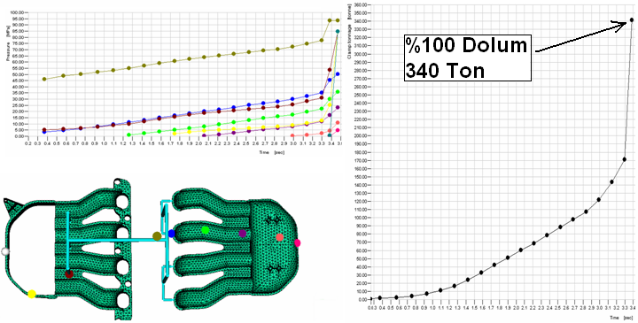

|
Parça kalýnlýðýnda yapýlan ikinci deðiþiklikle toplam çarpýlma 3,2mm'ye düþmüþtür ki elde edilen çarpýlma deðeri hala yüksektir. Bu sebeple parçada son bir geometrik deðiþiklik düþünülmüþ ve aþaðýdaki þekilde görüldüðü gibi federler eklenmesine karar verilmiþtir.
Þekil 21: Ýkinci parçaya feder eklenmesi
Parçanýn et kalýnlýklarý deðiþtirildikten sonra eklenen bu federler sayesinde toplam çarpýlma miktarý 2,6mm'ye düþmüþtür ve bu deðer bizim imalatýmýz için yeterlidir.
Üçüncü ve son parçanýn da alternatif baský þekilleri aþaðýdaki þekilde görülmektedir.
Þekil 22: Üçüncü parça plastik giriþ alternatifleri
| Enjeksiyon Basýncý [MPa] |
Hava Boþluðu |
Çarpýlma [mm] |
46 |
Yok |
0.9 |
21 |
Yok |
2.8 |
19 |
Yok |
2.1 |
Tablo 3: Üçüncü parça analiz sonuçlarý
Tabloda da görüldüðü gibi birinci alternatif en düþük çarpýlma miktarýný vermektedir ve uygulama için seçilmiþtir.
Analiz yapýlan bu parçalarýn ayrý kalýplarda deðil de bir aile kalýbý ile imal edilmesi düþünülmektedir. Aile kalýplarýnýn birçok avantajý bulunmaktadýr.
Aile kalýplarýnýn avantajlarý;
- Tek bir döngüde birçok parça imal edilebilir
- Parça þekil ve kalite dengesi saðlanabilir
- Ýyi bir kalýp bir kere tasarlandýðýnda dengelenmiþ imalat gerçekleþtirilebilir
- Kalýp bakým maliyetleri azalýr
- Takým maliyetleri düþer
Bu avantajlarýnýn yanýnda aile kalýplarýnýn gereksinimleri de;
- Plastik akýþ dengesi saðlanmalýdýr
- Maksimum enjeksiyon basýncý ve kapama kuvveti gereksinimi mevcut enjeksiyon makinesi sýnýrlarý içerisinde olmalýdýr
|
|
Þekil 23: Ýki parça için tasarlanan aile kalýbý ve plastik dolumu |
Yukarýdaki þekildeki gibi bir kalýp tasarlandýðýnda sað tarafta görüldüðü gibi toplam dolum iþleminin %95'ine gelindiðinde kapak parçasýnda tam dolum iþlemi gerçekleþmesine raðmen alt parçanýn üç noktasýnýn henüz dolmadýðý tespit edilmiþtir.
Bu tip bir dolumda kalýbýn bir kýsmýnýn dolmasýndan dolayý gerekli basýnç ihtiyacý ve buna baðlý olarak da gerekli kapama kuvveti artacaktýr. Eðer yeterli kapama kuvveti saðlanamaz ise kalýbýn birleþme yüzeyinde plastik malzeme dýþarý sýzarak son ürün üzerinde çapak oluþumu yapacaktýr. Fakat bu problemi enjeksiyon basýncýný ve kapama kuvvetini arttýrarak çözmek pek de ekonomik bir çözüm deðildir. Bunun sebebi enjeksiyon basýncýný ve kapama kuvvetini arttýrmanýn daha büyük enjeksiyon makinesine ihtiyaç doðurmasýdýr.
Aþaðýdaki þekilde kalýbýn farklý noktalarýndaki basýnç deðerleri ve dolum iþlemi için gerekli kalýp kapama kuvveti görülmektedir.
Þekil 24: Enjeksiyon basýncý ve gerekli kapama kuvveti
Þekilden de net bir biçimde görüldüðü gibi kalýptaki dengesiz dolumdan kaynaklanan basýnç artýþlarý ve bunun gerektirdiði yüksek kapama kuvvetleri söz konusudur. Oysa ki modelimiz üzerinde ufak ve basit deðiþiklikler yaparak dengeli bir dolum saðlayabiliriz.
Þekil 25: Dengelenmiþ model
Kalýp tasarýmýmýzda kapaða giden yolluklarýn çapý 8mm'den 6mm'ye düþürülmüþtür.
Bu iþlem çok ufak bir iþlem olmasýna raðmen kalýbýmýz içerisindeki plastik akýþýnýn dengeli olmasýný saðlamýþtýr.
Aþaðýdaki þekilde ise dengelenmiþ dolum sýrasýnda kalýbýn çeþitli noktalarýndaki enjeksiyon basýncý deðerleri ve gerekli kapma kuvvetleri görülmektedir.

Þekil 26: Dengelenmiþ dolumda enjeksiyon basýncý ve kapama kuvveti
Sonuç:
- Çok küçük deðiþiklikler imalatý geliþtirir.
- Gerekli kapama kuvveti %46 azaltýlmýþtýr.
- Dengelenmiþ plastik dolumu sayesinde oluþabilecek eksik dolum, kalýp deformasyonu vb. birçok problem önlenmiþtir.
- Kalýp ömrü uzatýlmýþtýr.
Plastik enjeksiyon iþlemi neredeyse tam hassasiyet ile analiz programlarý sayesinde simüle edilebilen bir iþlemdir. Plastik enjeksiyon analiz programlarýný parça tasarým aþamasýndan baþlayarak kullanmak ve kalýp tasarýmýný da bu araçlar ile sürdürmek oluþabilecek hatalarýn büyük bir bölümünü önceden tespit etmeye ve büyük maliyetler çýkmadan, tasarým aþamasýnda önlemeye yardýmcý olmaktadýr.
Parça tasarýmcýlarý, parça geometrisinden kaynaklanan hatalarý tespit edip imal edilebilir parçalar tasarladýklarýnda, imalat kademelerinde kalýp tasarýmlarý daha kolay gerçekleþtirilmekte, kalýp tasarýmý sýrasýnda plastik enjeksiyon analiz programlarý kullanýldýðýnda ise ilk baskýda istenen kalitede parça üretme oraný artmakta, kalýp tadilatlarý için gerekecek olan iþçilik, zaman, malzeme vb. gibi gereksinimlerin ortaya çýkardýðý ekstra maliyetler ortadan kalkmaktadýr.
Günümüz teknoloji çaðýdýr ve sadece kaliteli parça imal etmek yeterli deðildir. Kaliteli, hýzlý ve güvenilir parçalarý minimum maliyetlerle piyasaya süren firmalar faaliyetlerini sürdürmeye devam edebileceklerdir. Ýþte bu noktada da önceden hata tespitini saðlayan simülasyon programlarýnýn kullanýmýnýn artmasý imalat sektörünün daha hýzlý ilerlemesini saðlayacaktýr.
|